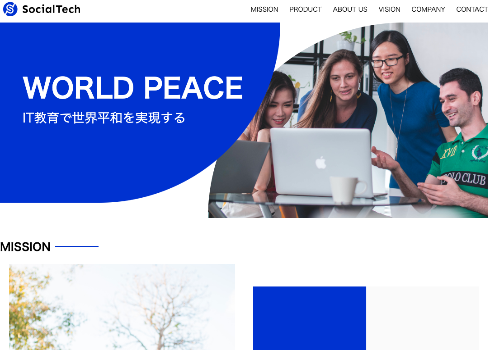

つなぐ
WORKS
Customer Centric E2E digital journey
インターネット上での情報検索から、問い合わせに辿り着くまでの一連の行動がスムーズに繋がることを考慮したアイデア・デザインをご提案いたします。
探す・見つける
集客ターゲットと製品・サービス・ブランドイメージ・戦略を考慮したデザインを提案。
各種SNS向けのデザインも作成可能です。

担当
デザイン
サイトの目的
お客様の自社メディアサイトでの使用。また広告での使用。
使用技術
Adobe Photoshop
デザインについて
メインターゲットが女性であることを考慮した配色をさせていただきました。
知る・学ぶ
顧客が求める情報（口コミ、料金設定、店の雰囲気など）が顧客目線で簡単に見つけられるサイトを作成。
従業員によるブログの更新など情報管理に負担をかけないよう、シンプルなテンプレートを使用。

URL
担当
WordPress構築・コーディング
サイトの目的
店舗の認知と集客
使用技術
WordPress
デザインについて
20~30代の女性のお客様が多い店舗のため、お客様の層に最適な画像素材を使用しております。
知る・学ぶ
入学を検討している人や在校生・卒業生向けに大学の最新情報をわかりやすく紹介。

URL
担当
デザイン・コーディング
サイトの目的
大学の紹介
使用技術
WordPress/PHP
デザインについて
同じようなデザインで学校機関や企業様のHPを作成することが可能です。
つながる
HPから各種問い合わせフォームや窓口につなげる。

URL
担当
デザイン
サイトの目的
企業の紹介
使用技術
html, css
デザインについて
企業のHPから問い合わせを容易にできるよう、各種コンタクトフォームに対応いたします。